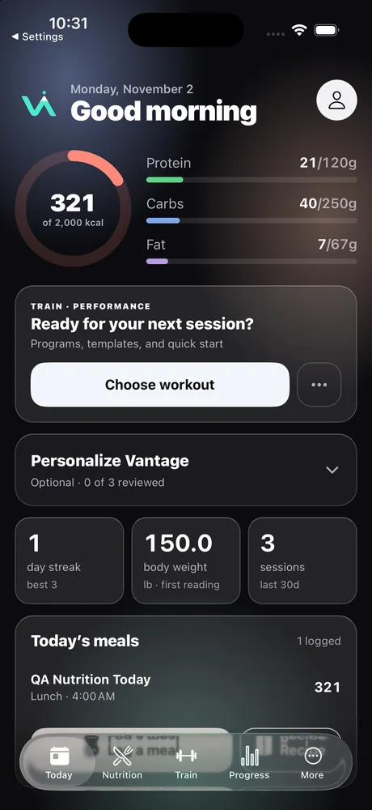
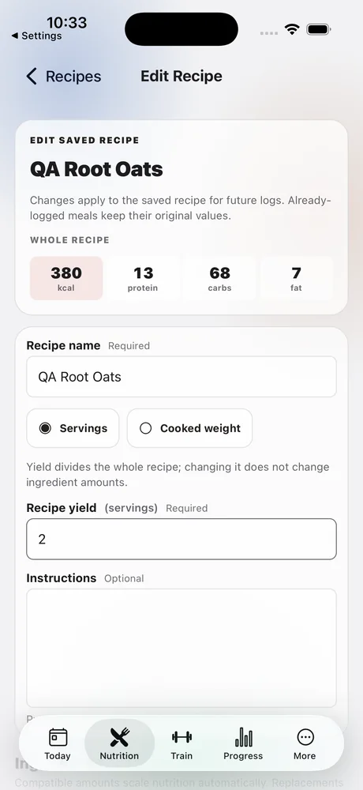
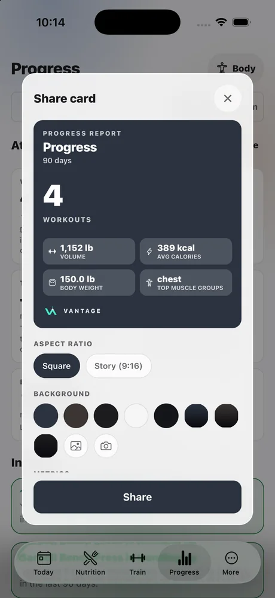

Log food your way
Natural language and voice, barcode scanning, USDA search, manual foods, saved meals, recipes, flexible targets, and a daily diary.
Private beta · Apple devices
Vantage is built for the work between the goals: logging the set, remembering the meal, and seeing whether the routine is actually moving.

A closer look
From the first meal to the last set, keep the details that make the next day easier.


Leave the phone down
Start a session, enter weight and reps, log timed or distance work, follow rest, check today’s nutrition, use saved meals, or dictate a meal from your wrist.

The routine, connected
A practical set of tools for recording, reviewing, and finding your rhythm. Vantage remains in private beta.
Natural language and voice, barcode scanning, USDA search, manual foods, saved meals, recipes, flexible targets, and a daily diary.
Programs, templates, quick workouts, previous-set context, notes, rest timing, plate math, duration, distance, and set types.
Workout frequency, volume, time trained, strength history, records, muscle balance, nutrition, weight, and consistency.
Sherpa can interpret meals, help build recipes and plans, and answer coaching questions with the context you choose to provide.
Focused iPhone flows, adaptive iPad layouts, and a Watch companion for workouts and meals.
Local guest use, optional accounts, export, account controls, appearance choices, and explicit privacy settings.
Private beta
Vantage is still being tested. Beta feedback goes directly to the person building it.